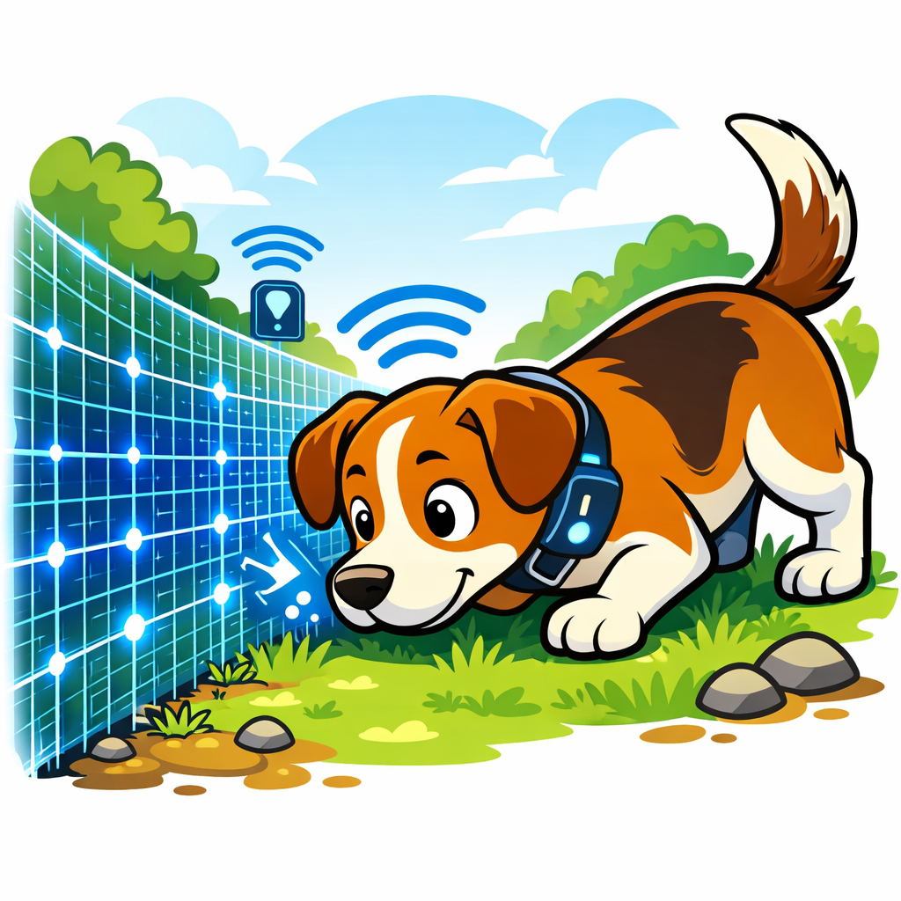
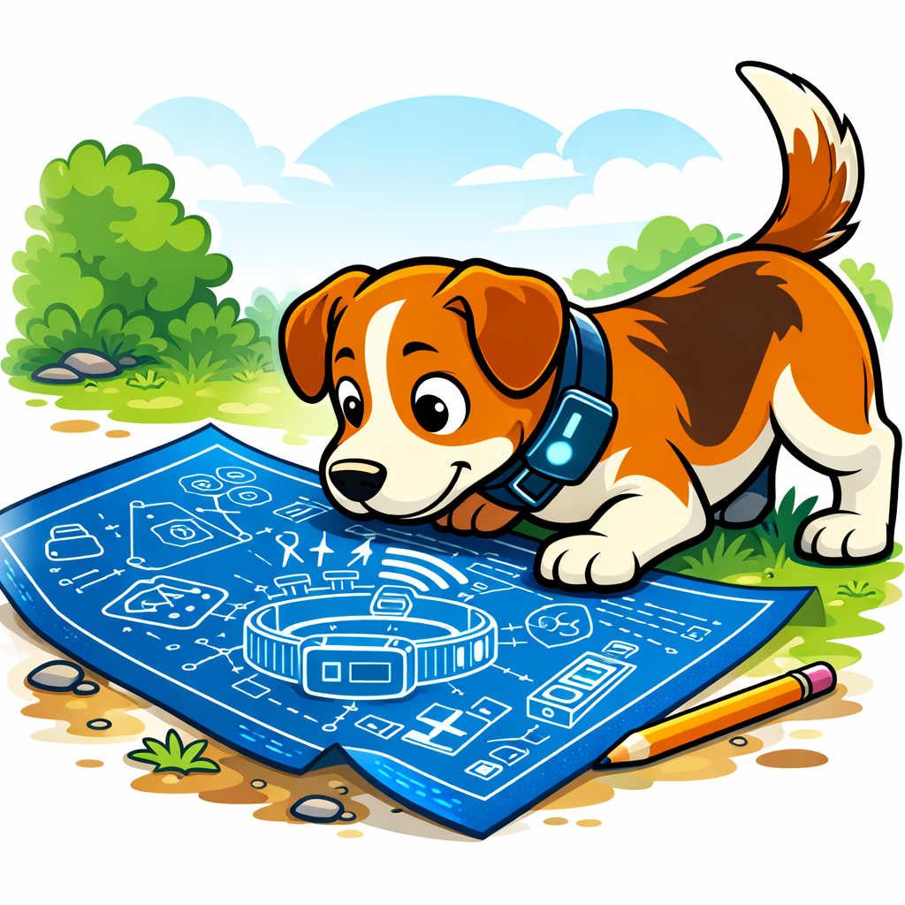

RFID-powered proximity reinforcement designed to create flexible, modular boundary systems without traditional fencing.
We’re a small team — Stefanos, Dom, Oleksander, Isaac, and Connor — focused on rethinking how dogs learn to respect boundaries. Frustrated by the continued reliance on electric correction, we set out to develop a more considered, humane approach to boundary reinforcement. We believe training tools should guide behavior without causing harm, and that we shouldn’t rely on methods we wouldn’t accept ourselves. Our goal is to usher in a new era of smart integration in your pet’s life — combining technology, practicality, and a more thoughtful philosophy toward training.

Our solution is a smart collar designed to humanely discourage dogs from crossing defined boundaries without the use of electric stimulation. Using RFID proximity detection, the collar delivers a consistent high-frequency audio cue when a boundary is approached. Over time, the dog begins to associate the sound with the restricted area, gradually reducing the need for repeated cues. Integrated GPS and mobile alerts keep owners informed in real time, while the system reinforces behavior automatically — creating a largely hands-off training approach. Rooted in established principles of classical conditioning, similar to those demonstrated in foundational behavioral studies, the goal is simple: consistent reinforcement that teaches boundary awareness through repetition rather than punishment.

P.A.T.K. is designed as a scalable platform, not just a standalone collar. Beyond boundary reinforcement, the system is built for integration with smart dog doors and feeders, enabling automated access and scheduled feeding based on proximity and behavior. Camera integration allows owners to monitor activity in real time, while an onboard speaker can emit an alert signal if a dog becomes lost. GPS tracking provides location visibility, and in the event of signal failure, LoRaWAN compatibility enables collar-to-collar or network-based alert relays for extended range communication. Environmental sensors measuring temperature and humidity provide additional welfare insights, with all data securely transmitted back to a dedicated mobile application. The result is an expandable ecosystem that evolves from a training tool into a comprehensive smart companion system.
#### Disclaimer: These additional eatures are in development. ####
Our business model is designed to remain flexible and accessible. We are exploring both an affordable subscription-based model and a one-time purchase option, allowing owners to choose what best fits their needs. A subscription structure would support continuous feature updates, cloud services such as GPS tracking, LoRaWAN network access, camera integration, and data storage, while keeping upfront hardware costs lower. Alternatively, a one-time fee model would provide core functionality without ongoing commitments, appealing to users who prefer full ownership with minimal recurring expense. By offering both approaches, we can balance long-term platform development with accessibility, ensuring the system remains sustainable while delivering consistent value to pet owners.